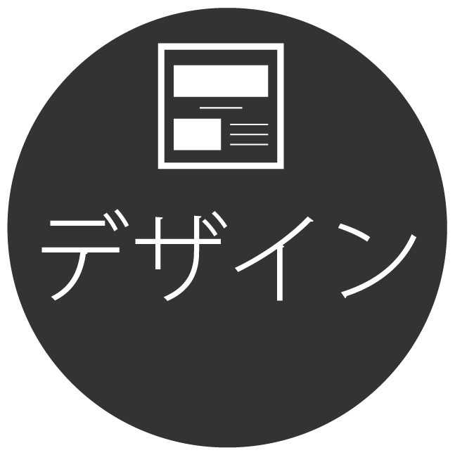

{kind=link}
架空のラーメン検索アプリ
UIデザイン
プロトタイプデザイン
Overview
架空のラーメンアプリ「ramenlink」のUIデザインを作成。
- 作成物好みのラーメンを探すアプリのUIデザイン
- 担当箇所デザイン作成
- 作成期間3日
- 使用ツールXD・Illustrator
Target
週１回以上外食でラーメンを食べる事がある若い男性
ペルソナ設定
学習塾でアルバイトをしており帰る時間は遅い。
夕飯は外食で済ませる事が多く、ラーメンを好んで食べる。
スープがこってりしたラーメンが好き。
休日は友人と電車で少し遠出をして観光することがある。
新しい店の場合、食べるまで味の雰囲気がわからないのが悩み。
comcept
ラーメンを味ごとに見やすく分類し、食べたラーメンを楽しく記録することで新しい一杯を探してもらう事に貢献できそうなUIデザイン
{kind=link}
{kind=link}
Process
作成フロー

- 
XDの練習とUIデザインを学ぶため作成しました。
作成する上で具体的な課題を設定するために、今回は以下のサイトの「究極のラーメン探せて記録出来るをアプリが欲しい！」というお題を元に作成をしました。
https://cocoda-design.com/projects/16
依頼の詳細についてまとめると
・同じ所ばかりではなく新しい店を見つけたい
・行きつけの店と味が似ている店をおすすめして欲しい
・ラーメンの特徴も複数あるので、旅行先でも使用したい
という希望がありました。
既存のアプリのデザインを参考にしつつ差別化をしようと考えた所、ラーメン店のレビューをさらに細かく味のベースごとに登録すれば様々な店の味を比較できると感じ、その店を特化したデザインを意識しました。
{kind=link}
■直感的に味がわかる色分け
味のベースごとに色を用意して様々な所で使用しました。
色と味のベースのイメージを合致させることによって、狭いスペースに表示させた際にも帯としてその色を配置すれば何の味がベースなのかがひと目でわかります。
「ラーメン」という名前のみでも味のベースを知ることができます。
{kind=link}
■自分の好きな味を細かく設定できる検索欄
行きつけの店と似ている店と一概に言っても、ラーメンのベースによって同じ店でも違いはあると思います。
なので店ごとの検索ではなく好みの味のベース、さらに細かく濃さや麺の太さ、詳しい条件などの入力ができるようにしました。
これにより、あっさりした細麺の味噌が食べたい……のような、細かい好みに合ったラーメンを探す事ができます。
いつもと違う味が食べたい場合もスライドを調整するだけで検索が可能です。
{kind=link}
■ユーザーの投稿率をアップさせるべく、レベルやランキング機能を搭載
ラーメンの味ごとに集計するシステムなのでユーザーの投稿が必要となります。
ユーザーに楽しく投稿していただくため、投稿するごとにレベルが上がるような仕組みを採用しました。
食事のレビューを見る際にレベルが高い順などに表示順を変えることで、自分が書いたレビューも多くの人に見ていただけるメリットもあります。
味のベースごとにレベルを搭載し、それぞれの味のベースを多く食べている人のレビューを参考にすることができます。
{kind=link}